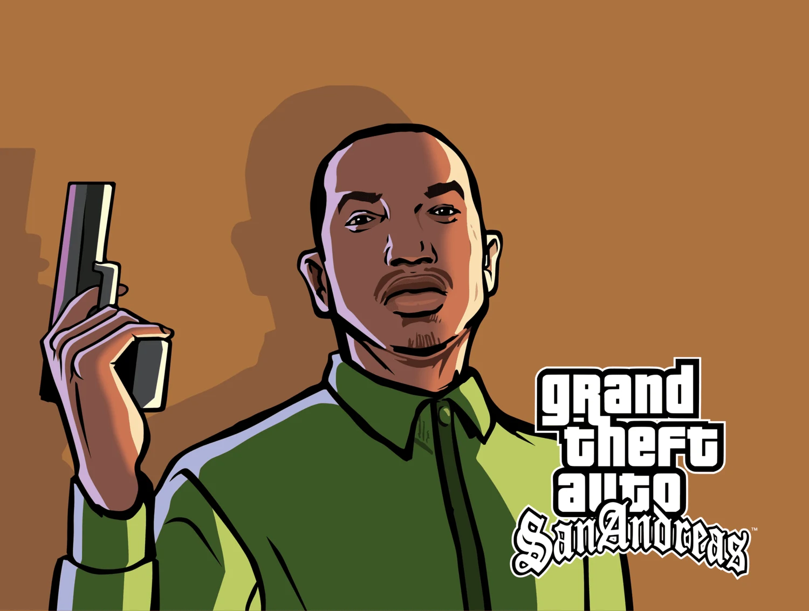

Break in. Drive away.
Smash a car window or pick the lock. Hotwire it, settle into the seat and watch CJ work the wheel.
DrIVe ModClassic PC. PS2 atmosphere.
A modern trip through San Andreas.

Built around the original PC game, with the warm skies and strong colours of the PS2 era, modern lighting, and small details you notice while playing.
RoSA and Proper Player Retex supply the texture foundation. SleekGraphics’ second SkyGfx preset is paired with an adjusted Proper Shaders Medium preset, GraphicsTweaker and Project2DFX.
The latest build goes further into car theft, character movement, weapons and everyday street activity. This is a personal community-mod collection, still being tested through the story.
Smash a car window or pick the lock. Hotwire it, settle into the seat and watch CJ work the wheel.
DrIVe ModPedestrian activities, people around storefronts, trucks towing trailers and extra details along the pavement.
Explore world modsUpdated movement, free-aim drive-bys and optional first-person play, with an interface built for a modern screen.
Explore gameplay modsSleekGraphics’ skygfx2.ini is the colour base. It is loaded as skygfx1.ini in normal SkyGfx 4.2b, alongside the original SleekGraphics GraphicsTweaker settings and the 24H Refixed timecycle.
Proper Shaders uses the Medium preset. The supplied October 2026 Medium configuration is retained across its presets, with SimulateHDR disabled. SkyGfx’s buildingPipe and vehiclePipe overrides are commented out so they do not override Proper Shaders’ rendering. The Extended-only stochasticTexturing setting is also commented out.
Keep the game’s brightness slider in the middle. RoSA, Proper Player Retex and Project2DFX complete the graphics foundation. This is the final SleekGraphics-based setup selected for the pack.
Graphics mods and creator linksForged San Andreas
October 2026 collection
The archive is hosted on VoidDrive. Grab the checksum too if you want to check that the download arrived intact.
Read the mission notes before playingKeep the archive and checksum file in the same folder. Open a terminal there and run the command for your system.
sha256sum -c "GTA San Andreas.7z.sha256"shasum -a 256 -c "GTA San Andreas.7z.sha256"Both commands should report GTA San Andreas.7z: OK.
Get-FileHash -Algorithm SHA256 -LiteralPath "GTA San Andreas.7z"Compare the result with the SHA-256 above. Letter case does not matter.
Checking reads the entire archive, so allow it time to finish. If the hashes differ, download the archive again before extracting it.
What it changes. Who made it. Where to find it.
Modern lighting, shadows, reflections and surface rendering. The central graphics upgrade in Forged.
This build uses the supplied October 2026 Medium presets, with SimulateHDR disabled to work with the chosen SkyGfx colour treatment. Third-party shader credits remain in the original package.
The colour and atmosphere reference for this build, using the second SkyGfx preset alongside its GraphicsTweaker settings.
Preset 2 is loaded as skygfx1.ini. The buildingPipe and vehiclePipe overrides are commented out for Proper Shaders. The Extended-only stochasticTexturing option is also commented out.
Restores console rendering features and supplies the classic San Andreas colour treatment used by the SleekGraphics preset.
Normal SkyGfx 4.2b is the graphics base documented for this build.
Configurable adjustments to the game’s graphics. This collection keeps the settings supplied with SleekGraphics.
A full-day timecycle based on the original game’s colours, supplying the changing weather and lighting behind the graphics preset.
The release page credits the original timecycle24 and its fork. Use the supplied pack configuration to retain the intended look.
The main world texture replacement: roads, buildings, signs and surfaces rebuilt around the original art direction.
September supporter edition in this collection. Evolved is led by Jéssica Natália, building on RoSA by dima001rus and MaKs_IV and the Reborn team. The source page lists the complete texture and legacy credits.
Higher-resolution textures for CJ and his clothing, keeping his familiar appearance.
Community fixes for map geometry, textures and other original-game errors. Includes work that helps modern lighting behave correctly on the map.
Use the RoSA-compatible edition and keep its Mod Loader priority above RoSA. The source page contains additional component credits.
Distant light sources and extended visual detail give the skyline more depth after dark.
Softens visible banding in the sky’s colour gradients.
Disables the original high-speed blur so driving stays clear.
Installed as sa-blur.asi in the game directory.
A loader for custom fullscreen post-processing shaders.
Installed as gta-sa-postfx.asi. The active shader chain depends on the included gta-sa-postfx.cfg; its presence alone does not identify which effects are enabled.
Break a window to steal a car, pick a lock through a minigame, and hotwire parked vehicles. Adds driving actions and animations, including working the steering wheel.
The lockpicking, window-breaking and driving features are part of this edition. The Fender Ketchup workaround is a temporary 30 FPS cap, not removal of DrIVe.
Inverse-kinematics animation brings hands and feet into contact with vehicle controls, including steering and pedals.
The visible result also depends on the vehicle model’s supported features.
Car bodywork deforms dynamically after impacts.
This collection uses VehDeform, not the separately discussed LocalDent mod.
Adds the possibility of being thrown through the windscreen during a hard collision.
Adds trucks towing trailers to ordinary traffic.
Changes traffic behaviour to address awkward braking, acceleration and reactions around other vehicles.
The screenshot confirms the folder name, not the exact release. This source is Junior_Djjr’s established version; a different implementation with the same name also exists.
Adds rear-light effects during driving and nitro use.
Effects and activation conditions are controlled by the included INI.
Choose vehicle colours and paintjobs, or pay for repairs separately without automatically repainting the car.
Ride as a passenger and let a taxi take you to your destination.
The installed folder is named Taxi Ride. The linked original project documents its controls and passenger system.
Adds an interior view during purchased airline journeys between the cities.
Adds ambient people and activities to places that otherwise feel empty, making the streets and public spaces busier.
Animations and other contributed assets are credited in the original release.
Adds everyday pedestrian activities and scenes around San Andreas, from workers to people spending time outdoors.
Features depend on the installed release and enabled scripts. Its source page maintains the current changelog.
Adds life around doorways and building entrances.
Street litter appears around pedestrian areas, with different kinds of rubbish in different neighbourhoods.
Fireflies appear in rural and natural areas after dark.
Installed under the firefly folder.
Small insects appear around the map, with more activity in natural areas than in the city.
Use motels to rest, advance time and restore health.
Additional room features depend on its configuration.
A framework for varying pedestrian, vehicle and weapon models according to configured rules.
The framework does not itself prove that every optional model pack is installed. Only the variations supplied in this collection are intended.
Makes the Triads and Los Aztecas friendly at the appropriate points in the story.
Visible holstered sidearms and batons add equipment detail to police officers.
Adds shop robberies inspired by GTA V.
Free aiming and shooting from vehicles, with support for additional weapon types.
CatchyKetchup’s revised edition builds on Manual Driveby Remake.
Optional first-person camera for on-foot play, vehicles and scripted sequences.
The camera can be switched in game. It is still a developing mod; the release page links the author’s current builds.
Movement and camera changes intended to give classic San Andreas a more modern feel.
The author’s showcase is linked here. The download shared during setup was in The Modders Collective Discord.
Brings movement behaviour inspired by the Stories games to San Andreas.
Used alongside the adapted animation set selected during setup. Avoid replacing the pack’s animation files with a second complete set.
The selected character animation mix, stored in the Animations folder.
The source package has the individual animation credits. This entry follows the animation set selected during setup; the folder name alone does not establish its exact revision.
Adjusts movement and animation blending, with configurable transitions and movement behaviour.
Present again in the latest inventory, despite having been removed during an earlier round of testing.
Adjusts camera position, distance and tilt, with optional motion during driving and crashes.
An installed movement-related component listed as HeadTracking.
The folder is recorded so it is not omitted. Its exact package, behaviour and author still need the original readme; a similarly named mod has not been substituted.
Camera reactions for driving, gunfire, close passes and hard landings.
Individual effects are configurable.
A death-camera modification inspired by the Stories games.
Configurable health recovery intended to fit normal play.
Listed as Smart_Health_Recovery in the installed collection. Recovery behaviour follows the supplied configuration.
Skips CJ repeatedly walking into and out of the changing room while you try on clothes.
Shows the appropriate food in CJ’s hand during eating animations.
Replaces the weapon set with more detailed models chosen to resemble the originals.
Compilation by ThePedro004. Individual model authors are listed in each weapon’s credits.txt; the source also credits nadalao, Firefly and Ezekiel.
Changes the neutral hold used by suitable weapons for the player and pedestrians.
Adds visual detail to weapon handling and moving parts.
This collection uses the Light Version. Do not assume all features of the full release are enabled.
Adds and fixes animations for drawing and changing weapons.
Corrects the original circular bullet-spread pattern.
Replacement weapon sounds supplied with the Faithful Weapons Pack.
This is the sound component of the weapon pack, kept as a separate Mod Loader folder.
Higher-quality source recordings for many of the original sound effects, including numerous vehicle engines.
Coverage is extensive, but it does not replace every sound in the game.
Adds sounds when handling, aiming and switching weapons.
Script by pedrowav; audio credits include Infinity Ward’s Modern Warfare (2019). Weapon switching uses Weapon Change Anim Fixed.
Radio interference and interruption effects give in-car audio more context.
New rain and thunder audio, including rain heard inside interiors.
The main interface overhaul, with redesigned HUD elements, animated counters and modern presentation.
Configuration component accompanying the Sleek mods.
Kept as part of the supplied Sleek setup, not presented as a separate visual overhaul.
Visual hit feedback during combat.
Allows different crosshair textures for individual weapons.
HzanRsxa2959 is the author; DK22Pac is credited for assistance.
An on-screen marker points towards the source of incoming damage.
Displays reloading feedback on screen.
Shows the amount of ammo, health, armour or money gained.
Keyboard icons for on-screen control prompts.
Adds map and radar markers for more places around the state.
Present in the latest inventory. The site records the current collection, not the earlier UI experiments.
The radar flashes to draw attention to your wanted status.
A radial weapon selector with mouse and gamepad support.
A radial selector for radio stations, including user tracks.
A corrected version of the sharper font from the mobile release.
Widescreen loading artwork in higher resolution, based on the classic illustrations.
The source offers 2K and 4K variants. The installed folder identifies the 2K edition. Original artwork by Rockstar; additional thanks to Paul_Babon.
The base collection of loaders and essential PC fixes used by the pack.
The key components confirmed in the setup are also credited individually below.
Loads and prioritises replacement files from separate mod folders.
Fixes a wide range of original PC bugs and technical issues.
Corrects widescreen presentation and related display issues.
Included through _ESSENTIALS.
Controls windowed and borderless display behaviour.
The fullscreen configuration used in this collection was adjusted during setup.
Addresses framerate-dependent behaviour and supplies a configurable FPS cap.
For Fender Ketchup, set FPSlimit = 30 in [Settings], restart the game and replay the mission. Restore your previous value afterwards.
Improved controller support, also used by mods that offer gamepad controls.
Runs the custom scripts used throughout the collection.
The installed CLEO support plugins include FileSystem Operations, IniFiles and IntOperations.
Additional scripting functions required by many of the gameplay and world mods.
Additional CLEO commands used by the interface and other scripted mods.
Loads separate effect definitions without replacing the whole effects file.
Expands selected engine limits for a larger modded installation.
Changes how game assets are kept and loaded in memory.
Kept in the latest collection. Initial loading and streaming stutter are still observed; no new memory configuration is claimed for this edition.
Used here for the exit-crash workaround.
The setup selected the all-disabled preset, enabled the mod, and set SkipShutdown = 1. This skips shutdown cleanup; it does not diagnose or repair gameplay crashes.
Guards against two specific crashes involving invalid pedestrian-task pointers.
A targeted protection for those crashes, not a guarantee that every animation or pedestrian mod is compatible.
The installed shopping-data limit plugin is retained in the inventory.
Recorded as ShoppingDatLimitAdjusterSA.asi. Its original author and release page still need confirmation from the included readme.
Records crash information to help diagnose problems.
A diagnostic component rather than a crash-prevention mod.
Compatibility component included as _noDEP.asi.
Loaded from the game directory as part of the support files.
No matches. Try another name or choose All.
Known behaviour and the fixes that worked in this build.
At higher framerates, the opening scripted drive can get stuck against the garage door. This is a known framerate-sensitive issue in the original game. In this pack, changing Framerate Vigilante’s limit to 30 FPS resolved it without removing gameplay mods.
FramerateVigilante.ini in the game folder. In this pack, look under modloader/_ESSENTIALS/FramerateVigilante.[Settings], change the existing line to FPSlimit = 30.Use the INI setting. Toggling the in-game limiter alone did not solve it in the tested setup. Original issue report
MixSets uses SkipShutdown = 1 with its other gameplay tweaks disabled. It bypasses the cleanup sequence that caused the exit crash in testing. It is not a fix for crashes during play.
The pack can take time to load, with stuttering while assets initially stream in. This is a known observation in the current build. Initial streaming still needs more testing with this many assets.
Keep a backup of your game folder and saves before adding or replacing mods. This edition is a fixed snapshot of the collection, rather than a promise that every future mod update will fit.
The graphics foundation stays. The world and the things you can do in it have grown.
Collection snapshot: 6 October 2026. The story playthrough is still in progress.
Forged is the collection. The individual mods belong to their creators.
The directory links to creators’ releases and credits the authors named there. Full contributor lists remain with each original package. Two small components, HeadTracking and ShoppingDat Limit Adjuster, still need their original readmes to finish the attribution.
Rockstar Games and Rockstar North created Grand Theft Auto: San Andreas. Forged San Andreas is an independent fan project, not an official Rockstar release or The Definitive Edition.
Site artwork: Rockstar Games promotional illustration, sourced from GTA Base’s San Andreas artwork archive. This illustration is not an in-game screenshot of the pack.
Typography: UnifrakturCook, Pirata One and Barlow / Barlow Condensed, available through Google Fonts.